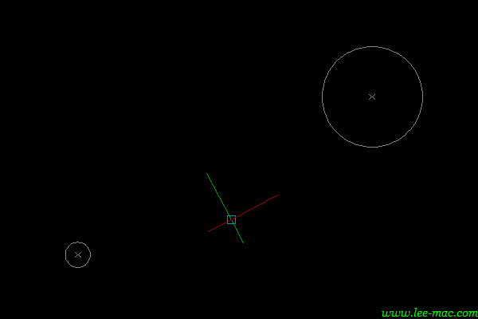

Circle Tangents
This page is delivered for consistency purposes only, as part of the LeeMac sample module of DynALisp, which shows how DynALisp turns existing AutoLISP programs into a module. The program and its description are the work of Lee Mac, who keeps all the credit for them. The original page, with the latest version, is on Lee Mac's website: https://lee-mac.com/circletangents.html
See also GrSnap.
| Function Syntax | LM-CircleTangents – original syntax: ctan (see aliases) |
| Current Version | 1.0 |
| Compatible with AutoCAD for Mac? | No |
| Compatible with AutoCAD LT? | Yes |
| Original Page | lee-mac.com/circletangents.html |
Program Description
This program allows the user to dynamically construct two circles connected with a pair of lines meeting the circumference of each circle at a tangent, resulting in a belt or cam shape.
Upon issuing the command syntax ctan at the AutoCAD command-line, the program will issue four successive prompts: the user is prompted to specify the center of the first circle and the radius of the first circle, followed by the center & radius of the second circle.
During each of these prompts, the circles and adjoining lines are displayed dynamically in real-time relative to the position of the AutoCAD cursor.
Following valid responses to all prompts, the program will construct the resulting shape using a 2D polyline (LWPolyline).
However, if the radius of the second circle is greater than the combination of the distance between the circle centers & radius of the first circle, the program will instead construct a circle centered at the second given center, with radius equal to this maximum limit.
Similarly, if the distance between the two circle centers is less than the radius of the first circle, the program will construct only the first circle.
Although the dynamic visual effect is dependent on heavy use of the AutoLISP grread function, this program utilises my GrSnap utility to enable full Object Snap functionality during the dynamic prompts. Furthermore, this program has been designed to perform successfully under all UCS & View settings.
Demonstration

See also GrSnap.
Bundled program notes
;;-----------------------=={ Circle Tangents }==-----------------------;;
;; ;;
;; This program allows the user to dynamically construct two circles ;;
;; connected with a pair of lines meeting the circumference of each ;;
;; circle at a tangent, resulting in a belt or cam shape. ;;
;; ;;
;; Upon issuing the command syntax 'ctan' at the AutoCAD ;;
;; command-line, the program will issue four successive prompts: the ;;
;; user is prompted to specify the center of the first circle, the ;;
;; radius of the first circle, followed by the center & radius of ;;
;; the second circle. ;;
;; ;;
;; During each of these prompts, the circles and adjoining lines are ;;
;; displayed dynamically in real-time relative to the position of the ;;
;; AutoCAD cursor. ;;
;; ;;
;; Following valid responses to all prompts, the program will ;;
;; construct the resulting shape using a 2D polyline (LWPolyline). ;;
;; ;;
;; However, if the radius of the second circle is greater than the ;;
;; combination of the distance between the circle centers & radius of ;;
;; the first circle, the program will instead construct a circle ;;
;; centered at the second given center, with radius equal to this ;;
;; maximum limit. ;;
;; ;;
;; Similarly, if the distance between the two circle centers is less ;;
;; than the radius of the first circle, the program will construct ;;
;; only the first circle. ;;
;; ;;
;; Although the dynamic visual effect is dependent on heavy use of ;;
;; the AutoLISP grread function, this program utilises my GrSnap ;;
;; utility to enable full Object Snap functionality during the ;;
;; dynamic prompts. The latest version and full documentation for ;;
;; this utility may be found at: http://www.lee-mac.com/grsnap.html ;;
;; ;;
;; Finally, this program has been designed to perform successfully ;;
;; under all UCS & View settings. ;;
;; ;;
;;----------------------------------------------------------------------;;
;; Author: Lee Mac, Copyright © 2014 - www.lee-mac.com ;;
;;----------------------------------------------------------------------;;
;; Version 1.0 - 2014-08-25 ;;
;; ;;
;; First release. ;;
;;----------------------------------------------------------------------;;
Command Names And Aliases
As in every DynALisp module, each program of this sample module has one main command, named LM-*, and the original command names of Lee Mac's page are kept as its aliases: they run the same command, and can be added, renamed or removed in Dyl-Suite (saved in Resources\Aliases.csv).
| Command | Aliases | Name |
|---|---|---|
| LM-CircleTangents | CTAN | Circle Tangents |